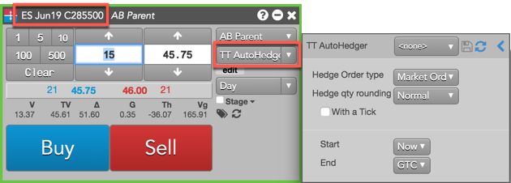
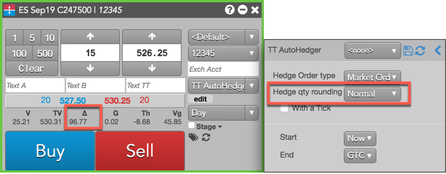
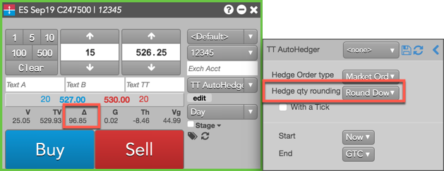
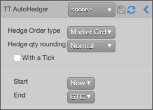

TT Autohedger allows traders to programmatically hedge their options trades with the underlying instrument. The TT Autohedger order type is used when submitting an order for an options instrument. When the options order fills, TT Autohedger uses the total delta of the executed options trade to calculate an order quantity for the underlying instrument. This helps traders maintain a delta neutral position.

After a fill is received for the options order, TT Autohedger submits a Market order for the underlying futures instrument with a quantity equal to: (fill quantity * delta). If delta is a positive value, a Sell order is submitted. If delta is negative, a Buy order is submitted. If delta is "0", no hedge order is submitted. TT Autohedger continuously receives updates to delta based on the current market.
By default, TT Autohedger uses the calculated hedge order quantity with normal rounding. However, you can also configure TT Autohedger to either round up or round down the value. For example, a hedge quantity between 96.01 — 97.00 is rounded up to "97" or rounded down to "96.00".
Note: For an options spread/strategy fill, TT Autohedger determines the net delta of the spread/strategy and uses that value to calculate the hedge order quantity.
In this example, Hedge qty rounding is set to the default setting of "Normal" and delta for the options instrument is "96.77". The initial options order is submitted for 15 contracts.

When the 15 lot order is filled, TT Autohedger multiplies delta for the instrument by the fill quantity of "15" for the ES Sep19 C247500 Call contract to determine the hedge order quantity. Delta is displayed as whole number, but is actually a percentage.
Hedge order quantity = 15 x.9677 = 14.5155 = 15 futures.
In this next example, Hedge qty rounding is set to "Round Up" when buying 15 of the ES Sep19 C247500 contracts. When TT Autohedger multiplies the options fill quantity by delta, the result will be rounded up.
Hedge order quantity = 15 X .9679 = 14.5185 = 15 futures.
In this last example, Hedge qty rounding is set to "Round Down" when buying 15 of the ES Sep19 C247500 contracts. When TT Autohedger multiplies the options fill quantity by delta, the result will be rounded down.

Hedge order quantity = 15 X .9685 = 14.5275 = 14 futures.
When configuring an order for an options instrument in MD Trader or the Order Ticket and the TT Autohedger order type is selected, the configuration fly-out opens.

The following parameters are included:
To enter a TT Autohedger order: